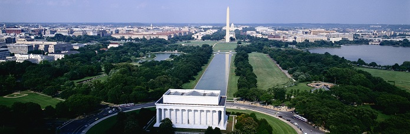
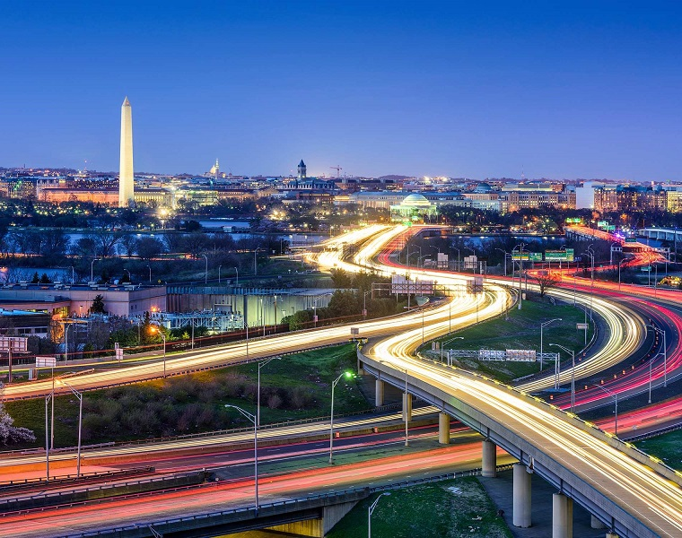
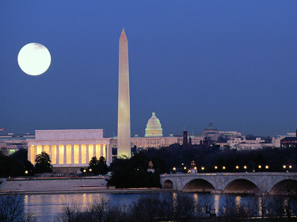
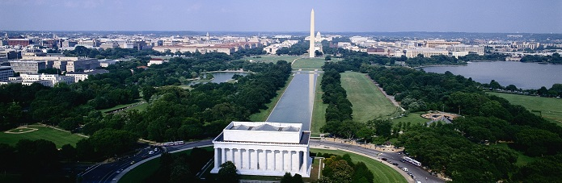
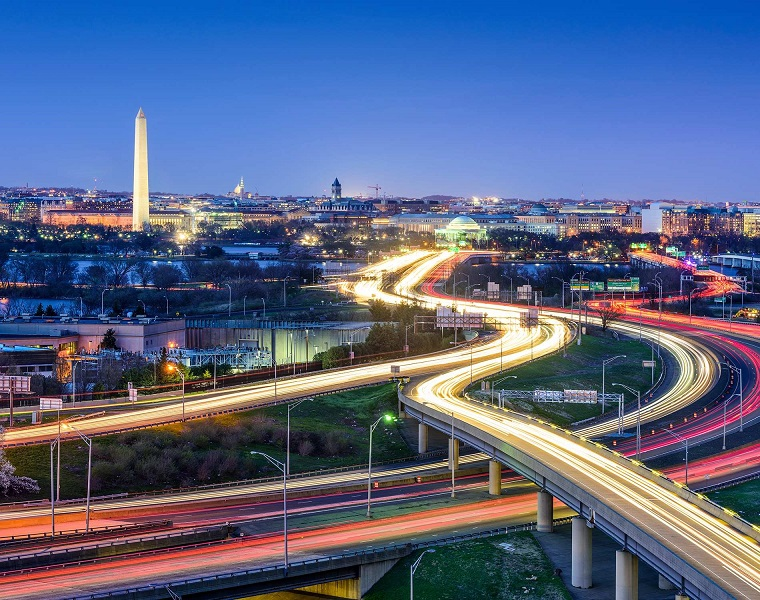
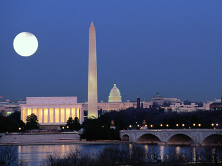
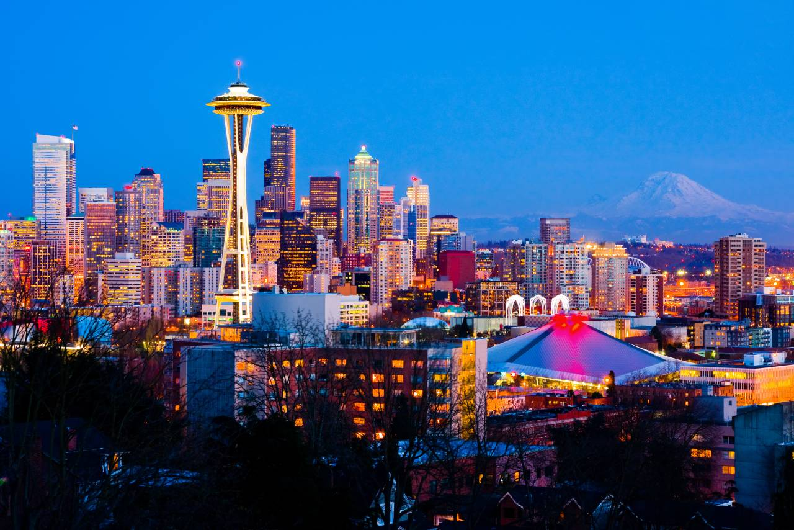
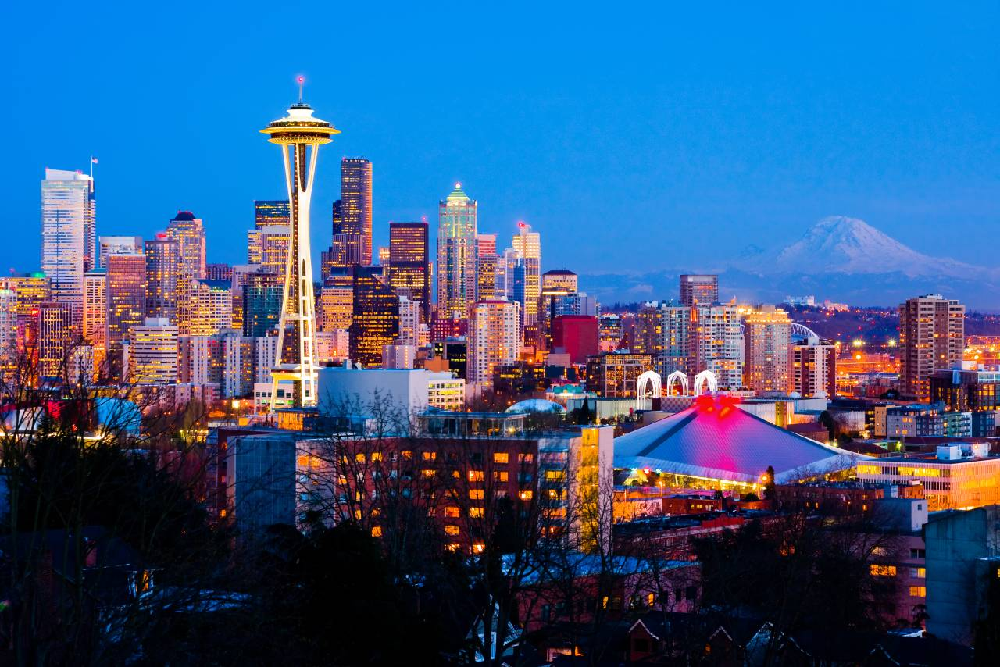

Washington
Willkommen in Washington
Hauptstädte genießen den zweifelhaften Ruf, die uninteressantesten Orte eines Landes zu sein, doch Washington bildet hier eine Ausnahme. Die von Bäumen gesäumten Avenues und die großartige Architektur aus dem 19. Jahrhundert sorgen für eine überraschend freundliche, fast anheimelnde Atmosphäre - wobei man einigen Stadtvierteln die Behaglichkeit allerdings absprechen muss. Die amerikanische Hauptstadt ist ein Spiegelbild der großen Ideale und der harten Realität der USA - wie die allgegenwärtigen Obdachlosen beweisen. Besucher werden sich schon bald einer bedrückenden Ironie bewusst: Armut und Rassentrennung existieren im Schatten der glanzvollen Monumente mit der Inschrift "Gleichheit für alle".
Washington ist sicherlich nicht so überdreht wie New York oder San Francisco, doch dafür zählen die Museen der Stadt (von denen viele keinen Eintritt verlangen) zu den besten in den Vereinigten Staaten, die Architektur der Hauptstadt ist beeindruckend und die Restaurants und das Nachtleben sind kosmopolitischer als gemeinhin angenommen.
Sehenswertes vor Ort
-
Das Kapitol
1793, drei Jahre nachdem Thomas Jefferson und Alexander Hamilton entschieden hatten, Washington zum Sitz der Bundeshauptstadt zu machen, begannen die Arbeiten an dem großen Kapitol, das dem Hügel östlich des Potomac Glanz verleihen sollte. Zur Jahrhundertwende zogen die Mächtigen, die Einflussreichen und die Gesetzesmacher in das Gebäude ein. 1814 brannten die Briten das Kapitol fast vollständig nieder und demoralisierten die Amerikaner damit derart, dass diese ernsthaft in Erwägung zogen, das gesamte Experiment Washington zu begraben. Doch so weit kam es nicht, denn nach einem äußerst knappen Entscheid für die Hauptstadt wurde das Kapitol von 1817 bis 1819 wiederaufgebaut. Die Flügel für des Repräsentantenhaus und den Senat kamen 1857 hinzu, die 4000 Tonnen schwere gusseiserne Kuppel im Jahre 1863 und die Ostfassade in der 50er Jahren des 20. Jahrhunderts. Damit ist das heutige Kapitol doppelt so groß wie das ursprüngliche Gebäude.
Das Kapitol ist das absolute Zentrum Washingtons und das berühmteste Wahrzeichen der Stadt. Die großen Avenues schneiden sich an einem imaginären Punkt unter der Kuppel. Wer eine Kongress-Sitzung live verfolgen möchte, kann sich ein Ticket für die Besuchertribüne besorgen, das beim Sergeant-at-Arms erhältlich ist. Das Innere der spektakulären Rotunde des Kapitols wird von einem Wandgemälde des italienischen Einwanderers Constantino Brumidi verziert. Das Bild mit dem Titel The Apotheosis of Washington (Die Apotheose Washingtons) zeigt George Washington, wie er im Himmel von 13 Engeln empfangen wird, die die ursprünglichen 13 Staaten repräsentieren sollen. In den Korridoren befinden sich weitere Wandgemälde mit den Abbildungen der Helden Amerikas und ihrer Taten - die jüngste Freske ist ein Porträt der tödlich verunglückten Challenger-Astronauten. In der Statuary Hall stehen zahlreiche Marmorstatuen. Theoretisch sollten es zwei herausragende Persönlichkeiten aus jedem US-Bundesstaat sein, doch in Wirklichkeit sind es ein paar weniger, weil der Fußboden nicht stabil genug ist, um noch mehr Marmor standzuhalten.
-
Smithsonian Institution
Auf der Mall befinden sich die meisten der berühmten Museen der Hauptstadt. Dem Smithsonian-Institut, einem der bedeutendsten Forschungszentren der Welt, sind 13 phänomenale Museen und Galerien sowie ein Zoo angegliedert. Die gesamte Sammlung ist so riesig, dass immer nur etwa 1% davon gerade ausgestellt wird. Die Smithsonian-Museen auf der Mall sind das mit Türmen besetzte rote Sandsteinschloss Smithsonian Castle (das Hauptquartier des Smithsonian), die Freer Gallery of American and Asian Art (amerikanische und asiatische Kunst), das National Museum of African Art (afrikanische Kunst), die Arthur M. Sackler Gallery of Asian Arts (asiatische Kunst), das Arts & Industries Building (mit einer Sammlung amerikanischer Kunst- und Kulturgegenstände aus dem viktorianischen Zeitalter), die National Gallery of Art und die Hirshhorn-Sammlung moderner Kunst.
Das zum Smithsonian gehörende National Air and Space Museum ist das meistbesuchte Museum der Welt. Es ist vollgepfropft mit Flugzeugen und Raumfahrzeugen in voller Größe, darunter auch die Flugmaschine der Gebrüder Wright und die Kommandokapsel von Apollo IX. Hier kann man einen Stein vom Mond anfassen, sich einen magenaufwühlenden IMAX-Film anschauen oder das Planetarium besichtigen. Das National Museum of Natural History beherbergt ebenfalls zahlreiche spektakuläre Highlights, beispielsweise Hope Diamond, ein Modell des größten jemals gesichteten Blauwals und ein riesengroßes Mammut. Hier findet man alles, was das Herz des Museumsbesuchers höher schlagen lässt: Dinosaurierknochen, Insekten und einen frisch renovierten Saal mit Edelsteinen und Erzgestein. Das National Museum of American History zeigt eine Fülle kultureller Meilensteine, z.B. das Original der amerikanischen Flagge und, weitaus bedeutender, den Original-Kermit (ja, der Frosch), Dorothys rote Schuhe (die aus dem Zauberer von Oz) und eine ganze Menge wirklich historischer Ausstellungsstücke. Das einen halben Block südlich der Mall gelegene US Holocaust Museum gehört nicht zum Smithsonian, zählt aber dennoch zu den besten Museen der Stadt. Die Gedenkstätte für die Opfer des Nationalsozialismus, beschäftigt sich mit der Periode von 1933 bis 1945. Die Ausstellungsstücke, darunter Film- und Tonaufnahmen, Fotos und persönliche Gegenstände, führen dem Besucher das Ausmaß der Gräueltaten des Dritten Reichs eindringlich vor Augen.
-
Das Weiße Haus
Seit dem Jahr 1800 haben sich alle Präsidenten im Weißen Haus eingerichtet und 1600 Pennsylvania Avenue damit zur berühmtesten Adresse der USA gemacht. Das Weiße Haus, eine neoklassizistische Villa (die übrigens gemütlicher ist als sie aussieht), überlebte die Brandschatzungen der Engländer im Jahre 1814, eine komplette Neugestaltung durch Jacqueline Kennedy in den 60er Jahren und mehrere Kentucky-Pferdederbys, die Ronald Reagan in den 80ern auf einem Besenstiel nachspielte. Die Präsidenten fügten dem Objekt nach und nach eine persönliche Note hinzu: Jefferson ließ Toiletten einbauen, Franklin Delano Roosevelt einen Swimmingpool, Truman einen Veranda im zweiten Stock, Bush eine Bahn zum Hufeisenwerfen und Clinton schließlich eine Jogging-Strecke und einen hölzernen Badezuber mit sieben Sitzplätzen. Einige Bewohner scheinen das Haus nie zu verlassen: Man munkelt, dass sowohl Eleanor Roosevelt als auch Harry Truman den Geist Abraham Lincolns in dessen ehemaliger Bibliothek gesehen hätten. Bei täglichen Führungen werden die Besucherherden durch acht Innenräume geführt. Das Gelände um das Weiße Haus ist für die Öffentlichkeit nur am Ostermontag anlässlich des traditionellen Easter Egg Roll (Ostereier-Rollen) zugänglich.
-
Library of Congress
Einen Block östlich des Kapitols liegt die Kongressbibliothek mit ihren etwa 100 Millionen Medien, darunter 26 Millionen Bücher, 36 Millionen Manuskripte und Karten, Fotografien, Noten und Musikinstrumente. Die Library of Congress ist die größte Bibliothek der Welt. Mit Büchern aus der Bibliothek wurde 1814 das Feuer im Kapitol entfacht. Danach verkaufte Präsident Jefferson seine Sammlung an die Bibliothek, um den Bestand wieder etwas anwachsen zu lassen. Der interessanteste Teil des Komplexes ist das Jefferson Building aus dem Jahre 1897 mit seinen gewölbten Decken und zahlreichen Verzierungen, zwei moderne Anbauten befinden sich gleich in der Nähe. In der Bibliothek werden gratis Filmklassiker gezeigt, und gelegentlich wird ein Konzert mit den fünf bibliothekseigenen Stradivari-Geigen aufgeführt.
-
Federal Bureau of Investigation (FBI)
Es besteht kein Zweifel, dass das Federal Bureau of Investigation eine mächtige Organisation ist, auch wenn kein Mensch die Agenten des FBI wählt. Das Hauptquartier befindet sich an der 10th Street Ecke Pennsylvania NW und verdankt seine offizielle Bezeichnung J. Edgar Hoover FBI Building seinem berühmt-berüchtigten Direktor, der maßgeblichen Anteil an der Entwicklung des bürokratisierten Verbrechensbekämpfungsapparats in seiner heutigen Form hatte. Eine der beliebtesten Führungen Washingtons führt durch das FBI-Gebäude mit Besichtigungen der Spurensicherungs- und DNA-Analyselabors und einer Asservatenkammer mit beschlagnahmten Gegenständen. Den Abschluss der Tour bildet die Live-Vorführung einer Maschinenpistole.
-
Washington Monument
Wer mit einem erstklassigen Blick auf das Becken des Potomac belohnt werden möchte, sollte das 166 m hohe Washington Monument erklimmen. Der Bau des weißen, vom Mittelpunkt der Mall aufragenden Obelisken wurde 1848 begonnen und erst 37 Jahre später fertig gestellt. Zunächst wurde das Projekt von Papstgegnern behindert, die gegen die Beteiligung von Pius IX. protestierten, dann führte der Amerikanische Bürgerkrieg zu einer Unterbrechung des Vorhabens. Ein Fahrstuhl führt nach oben, doch alternativ dazu gibt es auch eine Treppe mit Tafeln aller US-Bundesstaaten und einer der Nation der Cherokee.
-
Lincoln Memorial
Das Lincoln Memorial ist weit mehr als eine Gedenkstätte für den 16. Präsidenten der Vereinigten Staaten. Das 1922 fertig gestellte Bauwerk wurde schon bald zu einem Symbol für die Bürgerrechte, zu deren Wahrung sich Amerika verpflichtet hat. Auf den Stufen des Lincoln Memorial hielt Martin Luther King Jr. 1963 seine berühmte Rede "Ich habe eine Traum..." Die 36 Säulen des an einen griechischen Tempel erinnernden Monuments repräsentieren die 36 Staaten in Lincolns Union. Die Hände der 5,70 m hohen Statue drücken ein A und ein L in der amerikanischen Zeichensprache aus und würdigen damit Lincolns Engagement für das Gallaudet College für Taubstumme.
-
Vietnam Veterans Memorial
Die meistbesuchte Gedenkstätte in Washington, D.C. ist den Veteranen des Vietnamkriegs gewidmet. Das nackte, mächtige Bauwerk wurde von Maya Ying Lin entworfen, die nach einer landesweiten Ausschreibung als 21-jährige Architekturstudentin an der Yale University den Zuschlag erhielt. Zwei Mauern aus blank poliertem schwarzem Granit treffen sich in Form eines V und enthalten als Inschrift die Namen der 58 202 US-Amerikaner, die dem Vietnamkrieg zum Opfer fielen. Die bewegendsten Erinnerungsstücke sind die Notizen, Orden und Mahnzeichen, die von Überlebenden, Familienangehörigen und Freunden an der Gedenkstätte seit ihrer Fertigstellung 1982 zurückgelassen wurden. Die Kritiker des Entwurfs bestanden darauf, das Memorial um eine traditionellere Skulptur zu ergänzen. Eine Gedenkstätte für die Frauen, die im Vietnamkrieg dienten, wurde ebenfalls später hinzugefügt.
Entdecken Sie die Schönheit Washingtons

 






 
